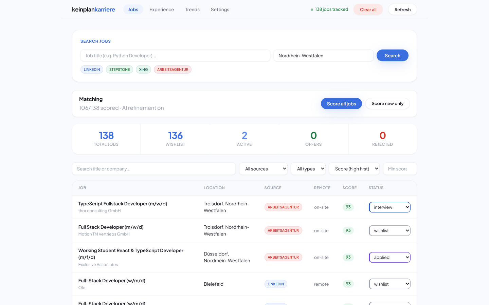
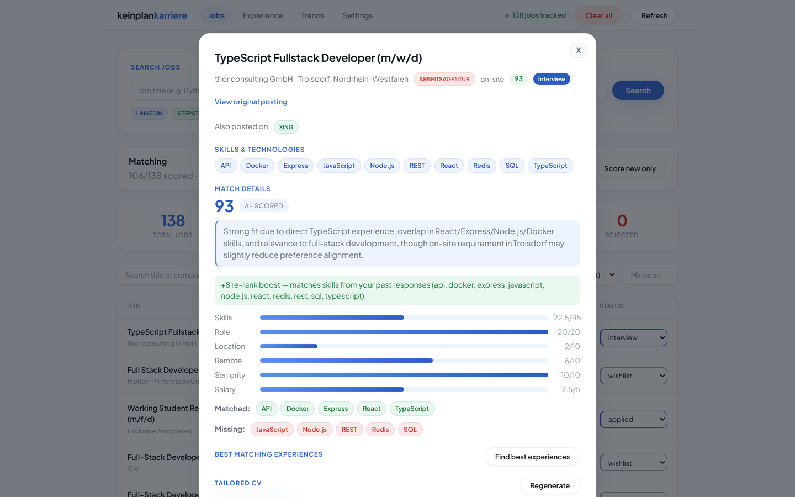
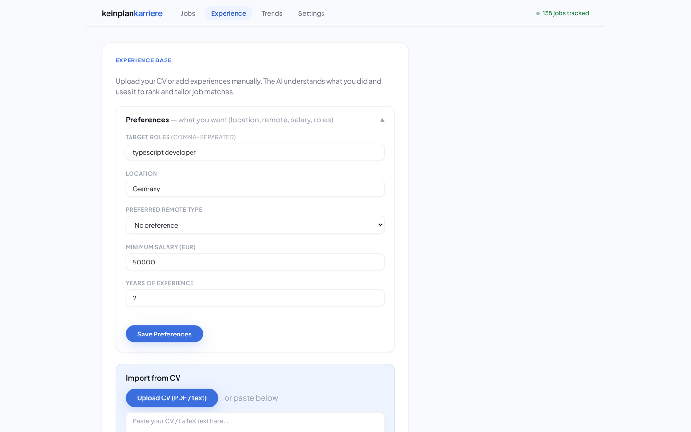
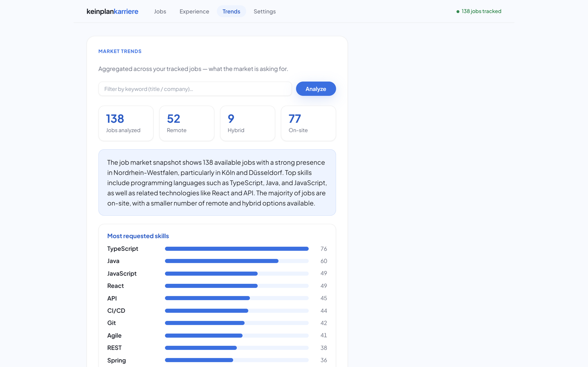

keinplankarriere
Project pitch · AI Agents · Westfälische Hochschule
The job hunt,
minus the busywork
An AI agent that finds German tech jobs, ranks them against your real experience,
and writes a tailored CV and cover letter for each one — so applying takes minutes, not an evening.
4 boards
searched in one query
0–100
explainable match score
2 PDFs
CV + letter, per job
You submit
never an auto-apply bot
Amine Benbelaid
keinplankarriere
The problem
Applying for jobs is a second job
Three things make the German job hunt exhausting — and all three can be automated
without removing the human from the decision.
Fragmented
The same role sits on LinkedIn, StepStone, Xing and the Arbeitsagentur. You search four sites and read the same job four times.
Repetitive
Every serious application means rewriting your CV and cover letter for that posting. 30–60 minutes, each time.
No feedback
You never learn which skills the market rewards, or which kind of application actually got a reply.
So people either spray generic applications everywhere — or burn out perfecting three. Both lose.
2
keinplankarriere
The solution
One agent, the whole loop
Find
4 boards, full descriptions, duplicates merged
→
Match
scored 0–100 against your real experience
→
Apply
tailored CV + cover letter in one click
→
Improve
learns from interviews and offers
Grounded in you
Upload your CV once and the AI turns it into a reviewed experience base — you confirm every entry. Every score and every document is built from what you have actually done. It never invents an employer, a date or a skill.
You stay in control
The agent prepares the application; you press submit. No stored job-board credentials, no terms-of-service violations, nothing sent without a human read.
3
keinplankarriere
The defining design decision
An assistant — not an auto-apply bot
The most requested "feature" in this space is the one we deliberately refused to build.
It would be reckless
Automatic submission breaks job-board terms of service, needs your login credentials stored somewhere, and breaks the day a form or bot-check changes.
It would also fail you
Applications fired off without a human read are exactly the low-effort spam recruiters filter out. Volume was never the bottleneck — quality per application is.
So we built the Apply Assistant
Tailored CV, cover letter, the posting link and a pre-submit checklist, prepared in one click. You review and send in under a minute.
The busywork disappears. The judgement stays human.
4
keinplankarriere
01 · Find
Four job boards, one clean list
LinkedInStepStone
XingArbeitsagentur
- One search queries all four boards in parallel
- The full description of every posting is fetched — the fuel for everything downstream
- Skills extracted from a curated German/English taxonomy
- Fuzzy matching merges the same role across boards into a single entry
- Applications tracked through wishlist → applied → interview → offer
keinplankarriere / jobs

5
keinplankarriere
02 · Match
A score you can argue with
keinplankarriere / job detail
Layer 1 — deterministic, every job
Layer 2 — AI on the top candidates
The model reads the posting and your experiences, re-scores, and justifies itself in a sentence. Unchanged jobs reuse a cached verdict, so a repeat run costs nothing.
6
keinplankarriere
03 · Apply
From “interesting” to application-ready
- Tailored CV — your LaTeX résumé, every bullet rewritten toward this posting, nothing dropped
- Cover letter — grounded in your experience, compiled to PDF
- Apply link + checklist, then “mark as applied”
- Your CV photo, your prompt add-ons, your own template
It always produces a valid PDF
Documents are compile-validated with Tectonic. If a tailored version fails, it repairs once, then falls back to your known-good template.
keinplankarriere / apply assistant

7
keinplankarriere
04 · Improve
It gets better the more you use it
experience base

market trends

Your experience base
Parsed from your CV by the AI, reviewed by you, and reused by every score and document.
Market trends
The skills actually in demand, salary ranges, remote split and the busiest employers — a by-product of structured data.
Outcome re-ranking
Mark a job as interview or offer and similar jobs rise; the AI scorer is told what has been working.
8
keinplankarriere
Engineering
Small stack, built to survive
One Docker image
FastAPI · SQLite · React · Tectonic
A FastAPI backend serves the built React dashboard and an embedded SQLite database; pure
requests + BeautifulSoup scrapers; Tectonic turns LaTeX into PDFs.
Any OpenAI-compatible LLM plugs in.
Python 3.12FastAPISQLite
React 18 + ViteDocker Compose
Multi-user by design
Each visitor gets an isolated workspace via a cookie session; all heavy work runs through one serial queue with a live “position in line”; visitors bring their own LLM key, so no credentials are shared.
Deterministic first
Deduplication, skill extraction and the base score are plain Python — fast, free and reproducible. The LLM is reserved for judgement: reading CVs, refining top matches, writing documents.
Resilience, learned the hard way
- Self-healing model choice when a provider retires a model mid-request
- Compile-validated documents with fallback to a known-good template
- Rate-limit back-off, response caching, graceful empty states
9
keinplankarriere
Four sprints · shipped & documented
From zero to an AI career agent
Sprint 1
Four scrapers, API, dashboard, application tracking — in Docker from day one.
Sprint 2
Skill extraction, deduplication, hybrid scoring, the experience base.
Sprint 3
Full descriptions, CV + cover-letter generation, Apply Assistant, trends.
Sprint 4
Multi-user sessions, work queue, bring-your-own-key, public packaging.
Website, code, deck and a one-command Docker setup — everything a reviewer needs to run it.
keinplankarriere.qantra.dev
10